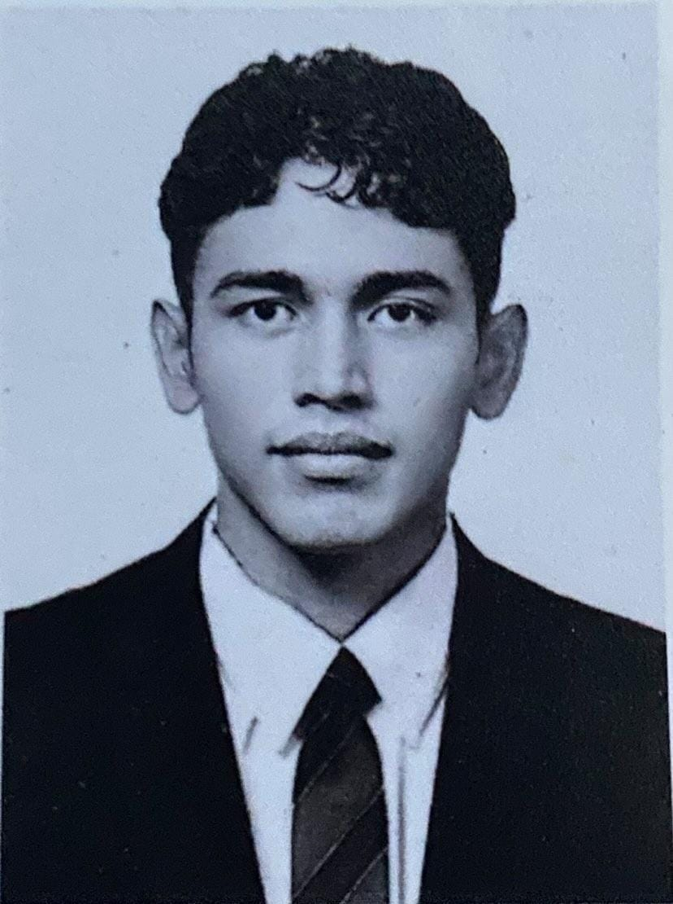

Juan ALfredo Morales Morataya
Perfil Profesional
No soy tan sociable, pretendo dejar una marca o una parte de mi a las personas que conozco, me motivo con mejorar cada vez que aprendo algo nuevo.
Datos Personales
Estudiante y Docente
Correo Electronico: alfredo060104m@gmail.com
Numero Celular: 42959006
Direccion: 2da. Avenida 3-60 Barrio de la Cruz
Amatitlan, Guatemala
Fecha/lugar de nacimiento: 6 de enero de 2004/Guatemala
Nacionalidad: Guatemala
Experiencia Laboral
Docente: Instituto Tecnico Vocacional Privado ITVO
Formacion
Formacion Academica
Universitario, Ingeniería en Sistemas, Guatemala City
02/2023-10/2027
Perito en Electronica y Dispositivos digitales
Instituto Tecnico Vocacional Privado ITVO
Basicos
Liceo Mixto Colonial
Primaria
Formacion Integral
Habilidades Tecnologicas
Google Workspace
Almacenamiento Digital
Microsoft Office: Word, Execel, Powe Point.
Habilidades Blandas
Trabajo en equipo
Adaptabilidad
Paciente
Orden y Calidad
Motivacion
Liderazgo
Empatia
Innovacion
Persistencia
Disciplina
Actividades Extracurriculares
Basquetbol, Futbol, etc.
Musica, Ejercicios, Arte y Tecnologia
Videojuegos, Juegos de logica, Caminar y Juegos de mesa
Hobbies
Jugar futbol
Caminar
Trabajar
Investigar sobre la nueva tecnologia
Referencias
Julio Gudiel Presidente de academia Amati JR
43787081
Josue Pineda Docente del ITVO
43368462
Osea Blanco Trabajador de PEPSI
47484950